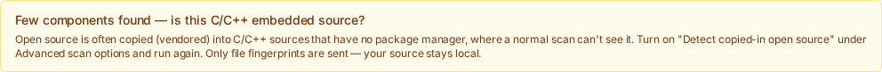
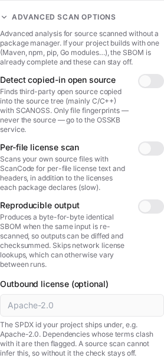
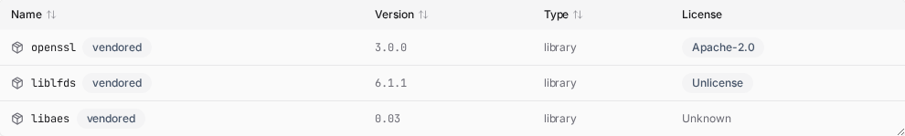

識別內含的開放原始碼 (C/C++)¶
掃描 C/C++ 嵌入式原始碼樹，而 BomLens 幾乎什麼都沒找到時，就用這個功能。
什麼時候需要¶
一般掃描會讀取套件管理器（npm、Maven、pip、Go、Conan 等）來判斷專案用了哪些開放原始碼。C/C++ 嵌入式韌體通常沒有套件管理器：開放原始碼是直接複製到原始碼樹裡的，例如 third_party/ 底下放一份 openssl、zlib 或 liblfds 的副本，這種做法稱為「已複製納入」(vendored)。cdxgen 無法辨識這些檔案的名稱，因此產出的 SBOM 幾乎是空的，每個檔案只會列成未識別的 pkg:generic 項目。
遇到這種情況時，BomLens 會印出一行提示建議開啟這個選項，網頁介面也會在掃描結束後顯示同樣的提示。使用者不需要自己察覺這個狀況。

--identify-vendored 會把原始碼的檔案指紋與公開的 OSSKB 知識庫比對，將每筆相符的結果記錄成實際的元件（名稱、版本、PURL），複製進來的開放原始碼因此會出現在 SBOM 裡；函式庫有已知 CVE 時，也會出現在安全報告中。
傳送的是什麼¶
傳送到 OSSKB 服務的只有檔案指紋（雜湊值）。原始碼絕不會離開本機。供應者可以在簽約之前，先在自己的環境裡執行這項功能。
在有套件管理器的專案上¶
這個選項是為沒有套件管理器的原始碼設計的。專案如果使用 npm、Maven、pip、Go 等，一般掃描已經能解析相依項目，就不需要它。就算還是開啟了，BomLens 也會整理結果：相依項目與建置目錄（node_modules、vendor、dist 這類）會被略過，名稱與既有套件管理器元件重複的比對結果也會被移除，改以套件管理器那份更權威的識別為準。因此在有套件管理器的專案上開啟它，不會讓已知的相依項目重複，也不會讓弱點數量膨脹；最多只是補上套件管理器看不到、確實被複製進來的原始碼。
每筆比對結果都以唯讀方式記錄，並標註來源與相符度。BomLens 不提供核可／退回這類稽核流程；需要確認或分類比對結果時，請把 SBOM 上傳到弱點管理系統（Dependency-Track、TRUSCA 等）再處理。
事前準備¶
已發佈的 bomlens 映像檔（v1.4.0 以後）已內含 SCANOSS 用戶端，不需要額外設定。只有自行以最小組態建置映像檔時，才要加上這個 build arg：
執行¶
scan-sbom.sh --project trelay --version 26.4.0 --target ./src \
--identify-vendored --all --generate-only
在網頁介面或桌面版應用程式中，展開進階並開啟偵測複製進來的開放原始碼。畫面上的標籤與本文標題不同，但指的是同一個功能。這個選項只有在原始碼掃描（目前目錄、git URL 或 ZIP 上傳）且映像檔支援時才會出現。
使用 Windows 而且不熟悉指令列的話，請先照著免指令列快速開始的桌面版應用程式步驟操作。

得到的結果¶
- 複製進來的開放原始碼會以帶有名稱與版本的元件形式出現在 SBOM 裡，每一筆都標上
vendored（bomlens:layer=vendored屬性）。 - 能對應到已知產品的元件會附上 CPE，因此 Trivy 安全報告會列出它們的 CVE。例如已複製納入的
openssl 1.1.1w會連帶顯示相關的弱點通告。 - 弱點資料庫裡沒有記錄的冷門函式庫（例如
liblfds、libaes、djbdns）仍然會識別出名稱與版本，只是沒有 CVE 可以回報；這是公開資料的限制，不是掃描的限制。
只有整個檔案完全相符的結果才會成為元件。部分（片段）相符的雜訊太多，會被排除，報告因此保持乾淨。

端點與限制¶
預設端點是免費的 OSSKB API，它有速率限制，也只供識別用途。從 CLI 可以用環境變數指向 SCANOSS 的商業或自架端點，以支援大量使用或封閉網路的情境：
SCANOSS_API_URL=https://your-scanoss-endpoint \
SCANOSS_API_KEY=your-key \
scan-sbom.sh --project trelay --version 26.4.0 --target ./src --identify-vendored --all --generate-only
在網頁介面與桌面版應用程式中，畫面上只能填入權杖。碰到免費 OSSKB 的速率限制時，請開啟偵測複製進來的開放原始碼，把從 scanoss.com 取得的權杖貼進開關下方出現的欄位，再重新執行一次。權杖只在該次掃描使用一次，絕不儲存也不記錄。
端點網址 (SCANOSS_API_URL) 與回報門檻 (SCANOSS_MIN_FILES) 只能透過 CLI 或容器環境變數設定，網頁介面與桌面版應用程式都沒有對應的輸入欄位。特別是桌面版應用程式不會把 SCANOSS_API_URL 傳進容器，所以目前無法從桌面版應用程式使用商業或自架端點。需要這類端點時，請改從 CLI 或 sbom-ui.bat 執行，並一併設定該環境變數。
版本只是近似值。檔案比對回報的是該檔案內容首次出現的版本，因此同一個函式庫的不同檔案可能解析出略有差異的版本，複製進來的函式庫也可能被回報成相差一個小版號的版本。請把版本（以及由它推導出的 CVE）當成檢視的起點，而不是最終判定。
歸屬的專案也可能判斷錯誤。許多專案都會複製的檔案（例如 zlib 的 deflate.c）可能比對到某個把它複製納入的下游專案，而不是真正的上游來源。為了減少這類雜訊，BomLens 只在至少兩個檔案指向同一個函式庫時才回報它（可用 SCANOSS_MIN_FILES 調整，設為 1 表示保留所有比對結果），並依這些檔案的多數共識決定版本與 PURL；零星的單一分支比對因此會被濾掉，散落在多個分支的函式庫也會收斂成單一元件。這有幫助，但不能完全解決問題——實際被複製的程式碼仍可能以別的名稱回報，連帶漏掉它的 CVE。這是知識庫的排序與涵蓋範圍的限制，在免費的 OSSKB 上更明顯；需要更精確的歸屬時，請把 SCANOSS_API_URL 指向 SCANOSS 的商業或自架端點。
另外，掃描本身已發佈在公開儲存庫的原始碼時，會比對到那個儲存庫（自己的第一方檔案比對到自己的公開專案）——這在原本設想的私有供應者原始碼情境下不會發生。
結果是盡力而為的推估，經過人工檢視會更可靠。OSSKB 的使用條款與授權說明請看 THIRD_PARTY_LICENSES.md。